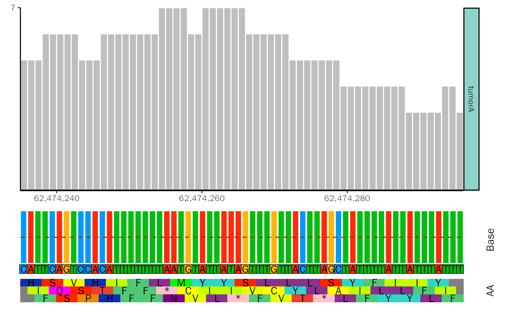

geom_base.RdAdd Base and Amino Acid Annotation to Coverage Plot.
geom_base( bam.file, fa.file = NULL, bs.fa.seq = NULL, chr.split = "[[:space:]]", nuc.offset = -0.1, nuc.size = 4, nuc.padding = 0.05, nuc.padding.r = 0, nuc.color = c(A = "#ff2b08", C = "#009aff", G = "#ffb507", T = "#00bc0d"), guide.line = NULL, guide.line.color = "red", guide.line.type = "dashed", show.aa = TRUE, sens = "F", numcode = 1, NAstring = "X", ambiguous = FALSE, aa.color = c(D = "#FF0000", S = "#FF2400", T = "#E34234", G = "#FF8000", P = "#F28500", C = "#FFFF00", A = "#FDFF00", V = "#E3FF00", I = "#C0FF00", L = "#89318C", M = "#00FF00", F = "#50C878", Y = "#30D5C8", W = "#00FFFF", H = "#0F2CB3", R = "#0000FF", K = "#4b0082", N = "#800080", Q = "#FF00FF", E = "#8F00FF", `*` = "#FFC0CB"), aa.size = 4, aa.margin = 2, aa.height = 0.4, plot.space = 2.5, plot.height = 0.5 )
| bam.file | BAM file. |
|---|---|
| fa.file | Genome fasta file. Default: NULL. |
| bs.fa.seq | BSgenome for species. Default: NULL. |
| chr.split | Split between chromosome name and description in |
| nuc.offset | Offset of nucleotide to frequency plot. Default: -0.1. |
| nuc.size | The size of nucleotide text. Default: 4. |
| nuc.padding | Background padding of nucleotide annotation. Default: 0.05. |
| nuc.padding.r | Radius of background padding. Default: 0. |
| nuc.color | Color scheme for nucleotides. Default: "A": "#ff2b08", "C": "#009aff", "G": "#ffb507", "T": "#00bc0d". |
| guide.line | Nucleotide frequency guide line. Default: NULL (0.5). |
| guide.line.color | The color of guide line. Default: "red". |
| guide.line.type | The line type of guide line. Default: "dashed". |
| show.aa | Logical value, whether to show amino acid. Default: TRUE. |
| sens | Sense to translate: F for forward sense and R for reverse sense.
Parameter of |
| numcode | The ncbi genetic code number for translation.
Parameter of |
| NAstring | How to translate amino-acids when there are ambiguous bases in codons.
Parameter of |
| ambiguous | If TRUE, ambiguous bases are taken into account so that for instance GGN is
translated to Gly in the standard genetic code. Parameter of |
| aa.color | Color scheme for amino acids. |
| aa.size | The size of amino acid text. Default: 4. |
| aa.margin | Top and bottom margin of amino acids. Default: 2. |
| aa.height | The relative height of amino acid to base frequency plot. Default: 0.4. |
| plot.space | Top and bottom margin. Default: 2.5. |
| plot.height | The relative height of base and amino acid annotation to coverage plot. Default: 0.5. |
Plot.
#>#>#> #>#> #> #>#> #> #> #> #> #> #> #>#>#>#> #>#> #> #>#>#>#>#>#>#> #>#> #> #>#># get sample metadata sample.meta <- data.frame( SampleName = c("tumorA.chr4.selected"), Type = c("tumorA"), Group = c("tumorA") ) # get bam file bam.file <- system.file("extdata", "DNA-seq", "tumorA.chr4.selected.bam", package = "ggcoverage") # load bam file track.df <- LoadTrackFile( track.file = bam.file, meta.info = sample.meta, single.nuc = TRUE, single.nuc.region = "chr4:62474235-62474295" ) ggcoverage( data = track.df, color = "grey", range.position = "out", single.nuc = TRUE, rect.color = "white" ) + geom_base( bam.file = bam.file, bs.fa.seq = BSgenome.Hsapiens.UCSC.hg19 )